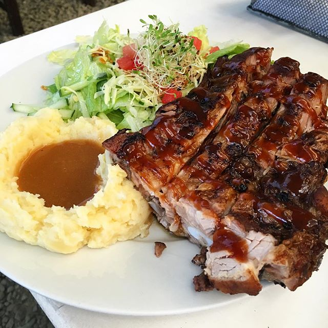
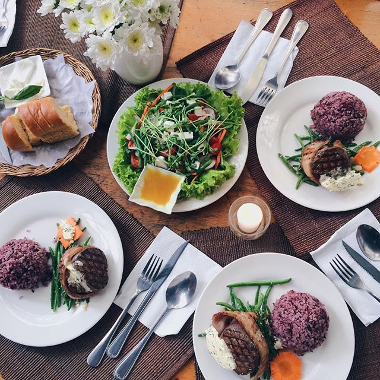
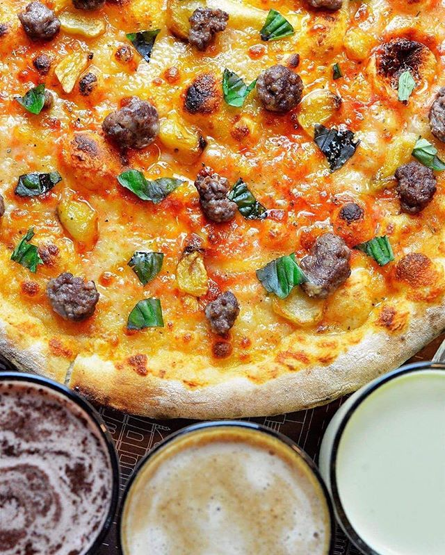

50’s Diner – Upper Gen. Luna Road
50’s Diner is an American retro diner filled with pop culture memorabilia such as posters of American icons, neon lights, a jukebox and even a red buggy. The whole vibe is reminisent of diners with servers on skates. Their menu includes steaks, pastas, fish and chips – as well as some Pinoy comfort food favorites. It’s for the young and the old who appreciate the throwback. It’s not for people who want a quiet and relaxed space to chill in. We recommend the Guys on the Hood, Gangsta Gangsta and their milkshakes. Our insider tip: Avoid over-ordering as servings of some dishes are already good for sharing.
Canto Bogchi Joint – Ketchup Food Community
Ketchup: The Food Community is a popular community food park that features homegrown Baguio food concepts. Each one offers a different cuisine ranging from Asian to Western, and of them is Canto Bogchi Joint. Canto is an American eatery serving steaks, ribs, tacos, and fries. It’s for people who love big saucy ribs. It’s not for big groups who don’t like to queue on a restaurant’s good day. We recommend the famous Lomo Ribs. Our insider tip: You can order from any restaurant in the establishment and have it served wherever you choose to be seated.
Café by the Ruins – Shuntug St.
When talking about Baguio’s must-try restaurants, Café by the Ruins has always been part of the list – serving natural and local ingredients that embody its way of cooking that is distinctly Baguio. It’s for people who want to taste authentic local dishes that tell something about the region’s culture. It’s not for guests who have a deep stomach and a bottomless appetite. We recommend the Pinikpikan, which is chicken soup used in rituals by natives, and the Baguio Bagnet with Padas bagoong, tomato relish, and lime. Our insider tip is to try getting their guava preserve jam as pasalubong from your long weekend adventures.
Amare La Cucina Restaurant – EGI Albergo Hotel
Amare La Cucina is an Italian restaurant famous for its traditional slow-cooked pizza and baby back ribs. Though it’s not in the heart of the city, a lot of people still visit the restaurant for its uniqueness and their traditional way of cooking. It’s for Italian cuisine lovers who want to try novelty pizzas in Baguio. It’s not for people who want multiple cups of rice to supplement their meal. We recommend the White Pizza, Wagyu Pizza and the Foie Gras with Truffle Oil pizza. They have so many unique flavors. Our insider tip is that they even have a nutella-based pizza to satisfy your sweet tooth.